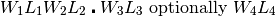
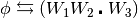
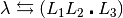
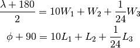
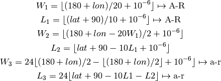

gridsq – Grid Square Locator (Maidenhead)¶
The gridsq includes the same astronomical calculations as daydusk and riseset.
These all seem to be based on the following:
2880 :REM'..... UTC times - based on DAYLIGHT program, HAM-SOFT disk# 1247
Since this is biased toward ham radio, it uses the Morse code abbreviation “QTH” for location.
Analysis¶
This is a coordinate transformation from Grid Squares to Latitude and Longitude.
It will also compute the distance between two grid squares in kilometers, statute miles or nautical miles.
As a bonus, it also computes sunrise and sunset in UTC times.
Grid Squares¶
The Grid Squares work like this.
Here’s a Grid Locator:
B L 1 1 b h 1 6
Here’s the decode.
- BL Field longitude and latitude. 18 letters used (A-R).
- E-W is 20°, N-S is 10° per letter.
- 11 Square longitude and latitude. 10 digits used (0-9).
- E-W is 2°, N-S is 1° per digit.
- bh Subsquare longitude and latitude. 24 letters used (a-x).
- E-W is 5’, N-S is 2.5’ per letter. The assumed center is “ll”.
16 Extended square. 10 digits used.
Coordinates use longitude from E to W starting at the prime antimeridian (180°) and latitude from S to N starting at the south pole.
We can label the positions of the string as follows:

Longitude is ; latitude is .
Given E-W longitude,  , and N-S latitude,
, and N-S latitude,  , it looks like this.
, it looks like this.

Since Python has divmod(), this calculation is pretty simple.
Distance Between Grid Squares¶
The legacy program also computes the distance between two grid squares in kilometers, statute miles or nautical miles.
This is part of the hamcalc.navigation.distance module. See pathfind – Great Circle Paths & Distances.
Sunset and Sunrise Times¶
As a bonus, it also computes sunrise and sunset in UTC times.
This is yet another application for the hamcalc.navigation.solar module, sunup – Sunrise, Sunset, Transit.
Implementation¶
We have three parts:
Grid Squares¶
hamcalc.navigation.gridsq – Grid Squares.
Test Case
>>> import hamcalc.navigation.gridsq as gridsq
>>> gridsq.latlon_2_grid( 38.98, -76.47 )
'FM18sx'
>>> lat, lon = gridsq.grid_2_latlon( "FM18sx" )
>>> round(lat, 4), round(lon, 4)
(38.9792, -76.4583)
Convert Grid Square Code to lat and lon pair.
Note that default center-of-square values are provided for missing positions.
Parameters: grid – 2, 4 or 6-position grid-square code. Returns: latitude and longitude
Convert lat/lon as decimal values to Grid Square Code.
Parameters: - lat – Decimal latitude, positive north
- lon – Decimal longitude, positive east, negative west.
- level – level of deatil: 1 to 4. 1 gives a two-position code. 4 gives an 8-position code.
Returns: grid square code (6-position by default.)
Great Circle Distance¶
hamcalc.navigation.distance – Great Circle Distance Calculation.
Test Cases
>>> import hamcalc.math.trig as trig
>>> import hamcalc.navigation.distance as distance
>>> deg = distance.dms_2_deg
>>> lat_1, lon_1 = deg(50, 21, 50), -deg(4, 9, 25)
>>> lat_2, lon_2 = deg(42, 21, 4), -deg(71, 2, 27)
>>> lat_1, lon_1
(50.36388888888889, -4.156944444444444)
>>> lat_2, lon_2
(42.3511111111111, -71.04083333333335)
>>> r, b = distance.rhumb_range_bearing( lat_1, lon_1, lat_2, lon_2, R=distance.KM )
>>> round(r,0)
5196.0
>>> tuple( int(round(x,0)) for x in distance.deg_2_dms( b ) )
(260, 7, 38)
>>> lat_1, lon_1 = deg(51,7,32), deg(1,20,17)
>>> bearing = deg(116,38,10)
>>> round(bearing,1)
116.6
>>> lat_2, lon_2 = distance.rhumb_destination( lat_1, lon_1, 40.23, bearing, distance.KM )
>>> tuple( map( int, distance.deg_2_dms( lat_2 ) ) )
(50, 57, 48)
>>> tuple( map( int, distance.deg_2_dms( lon_2 ) ) )
(1, 51, 8)
>>> lat_1, lon_1 = deg(50, 3, 59), -deg(5, 42, 53)
>>> lat_2, lon_2 = deg(58, 38, 38), -deg(3, 4, 12)
>>> d= distance.great_circle_distance( lat_1, lon_1, lat_2, lon_2, R=distance.KM )
>>> round(d,1)
968.9
>>> theta= distance.great_circle_bearing( lat_1, lon_1, lat_2, lon_2 )
>>> tuple( map( int, distance.deg_2_dms(theta) ) )
(9, 7, 11)
>>> lat_1, lon_1 = deg(53, 19, 14), -deg(1, 43, 47)
>>> bearing= deg(96, 1, 18)
>>> lat_2, lon_2= distance.great_circle_destination( lat_1, lon_1, 124.8, bearing, R=distance.KM )
>>> tuple( map( round, distance.deg_2_dms(lat_2) ) )
(53, 11, 18)
>>> tuple( map( round, distance.deg_2_dms(lon_2) ) )
(0, 7, 60)
>>> lat_1, lon_1 = deg(35, 0, 0), deg(45, 0, 0)
>>> lat_2, lon_2 = deg(35, 0, 0), deg(135, 0, 0)
>>> theta= distance.great_circle_bearing( lat_1, lon_1, lat_2, lon_2 )
>>> tuple( map( int, distance.deg_2_dms(theta) ) )
(60, 9, 44)
- hamcalc.navigation.distance.great_circle_bearing(lat_1, lon_1, lat_2, lon_2)[source]
Initial bearing from (lat_1, lon_1) to (lat_2, lon_2).
Parameters: - lat_1 – latitude, postive N
- lon_1 – longitude, positive E
- lat_2 – latitude, postive N
- lon_2 – longitude, positive E
Returns: bearing from from (lat_1, lon_1) to (lat_2, lon_2). In degrees.
- hamcalc.navigation.distance.great_circle_destination(lat_1, lon_1, range, bearing, R=3440.069)[source]
Great Circle destination given point, range and bearing.
Parameters: - lat_1 – latitude, postive N
- lon_1 – longitude, positive E
- range – the distance to travel.
- bearing – the direction of travel, in degrees.
- R – radius of the earth in appropriate units; default is nautical miles. Values include KM for kilometers, MI for statute miles and NM for nautical miles.
Returns: lat and lon of the ending point.
- hamcalc.navigation.distance.great_circle_distance(lat_1, lon_1, lat_2, lon_2, R=3440.069)[source]
Great Circle Distance from (lat_1, lon_1) to (lat_2, lon_2).
Parameters: - lat_1 – latitude, postive N
- lon_1 – longitude, positive E
- lat_2 – latitude, postive N
- lon_2 – longitude, positive E
- R – radius of the earth in appropriate units; default is nautical miles. Values include KM for kilometers, MI for statute miles and NM for nautical miles.
Returns: distance from from (lat_1, lon_1) to (lat_2, lon_2).
- hamcalc.navigation.distance.rhumb_destination(lat_1, lon_1, range, bearing, R=3440.069)[source]
Rhumb line destination given point, range and bearing.
Parameters: - lat_1 – latitude, postive N
- lon_1 – longitude, positive E
- range – the distance to travel.
- bearing – the direction of travel in degrees.
- R – radius of the earth in appropriate units; default is nautical miles. Values include KM for kilometers, MI for statute miles and NM for nautical miles.
Returns: lat and lon of the ending point.
- hamcalc.navigation.distance.rhumb_range_bearing(lat_1, lon_1, lat_2, lon_2, R=3440.069)[source]
Rhumb-line course from (lat_1, lon_1) to (lat_2, lon_2).
Parameters: - lat_1 – latitude, postive N
- lon_1 – longitude, positive E
- lat_2 – latitude, postive N
- lon_2 – longitude, positive E
- R – radius of the earth in appropriate units; default is nautical miles. Values include KM for kilometers, MI for statute miles and NM for nautical miles.
Returns: 2-tuple of range and bearing from from (lat_1, lon_1) to (lat_2, lon_2).
Sunset and Sunrise Times¶
Legacy Introduction¶
GRID SQUARE LOCATOR (Maidenhead) by Dr.Thomas Clark W3IWI
edited and enhanced for HAMCALC by George Murphy VE3ERP
Grid squares were developed by an international group at a
conference in Maidenhead, England, hence the name "Maidenhead"grid squares.
Grid squares are based on latitude and longitude. Each square is
1° high x 2° wide, further divided into sub-squares only a few
kilometres wide. Grid squares are coded with a 2-letter/2-number/
2-letter code (such as FN04HO). Most people just use the first four
characters (such as FN04), which is the grid square. The last two
letters are generally used only when it is desired to pinpoint a
a location within a sub-square.
This program computes the grid square code for any latitude/
longitude in the world, or the coordinates of the approximate
centre of any grid square or sub-square. It also computes distances
and beam headings between specified grid squares or sub-squares.
Coordinates need only be known within an accuracy of 0.1° which
is about 11 km north-south, and east-west about 11 km at the
equator, 8 km at 45° latitude, and 1 km at 85° latitude.
All computations are in decimal degrees. To convert deg/min/sec
coordinates to decimal degrees, run the EQIVALENT VALUES program.
(ref. The ARRL OPERATING MANUAL, 5th Edition, pp.12-4 to 12-6)
The “World Chart”, page 1.
M A I D E N H E A D G R I D S Q U A R E F I E L D S
with First Two Characters of Grid Square Code
Degrees West Degrees East
160° 120° 80° 40° 0° 40° 80° 120° 160°
80°N -90.0°N │AR│BR│CR│DR│ER│FR│GR│HR│IR║JR│KR│LR│MR│NR│OR│PR│QR│RR│
70°N -80.0°N │AQ│BQ│CQ│DQ│EQ│FQ│GQ│HQ│IQ║JQ│KQ│LQ│MQ│NQ│OQ│PQ│QQ│RQ│
60°N -70.0°N │AP│BP│CP│DP│EP│FP│GP│HP│IP║JP│KP│LP│MP│NP│OP│PP│QP│RP│ Each Field
50°N -60.0°N │AO│BO│CO│DO│EO│FO│GO│HO│IO║JO│KO│LO│MO│NO│OO│PO│QO│RO│ contains
40°N -50.0°N │AN│BN│CN│DN│EN│FN│GN│HN│IN║JN│KN│LN│MN│NN│ON│PN│QN│RN│ 100 grid
30°N -40.0°N │AM│BM│CM│DM│EM│FM│GM│HM│IM║JM│KM│LM│MM│NM│OM│PM│QM│RM│ squares,
20°N -30.0°N │AL│BL│CL│DL│EL│FL│GL│HL│IL║JL│KL│LL│ML│NL│OL│PL│QL│RL│ each being
10°N -20.0°N │AK│BK│CK│DK│EK│FK│GK│HK│IK║JK│KK│LK│MK│NK│OK│PK│QK│RK│ 2° wide x
0°N -10.0°N │AJ│BJ│CJ│DJ│EJ│FJ│GJ│HJ│IJ║JJ│KJ│LJ│MJ│NJ│OJ│PJ│QJ│RJ│ 1° high.
«EQUATOR»
0°S -10.0°S │AI│BI│CI│DI│EI│FI│GI│HI│II║JI│KI│LI│MI│NI│OI│PI│QI│RI│
10°S -20.0°S │AH│BH│CH│DH│EH│FH│GH│HH│IH║JH│KH│LH│MH│NH│OH│PH│QH│RH│
20°S -30.0°S │AG│BG│CG│DG│EG│FG│GG│HG│IG║JG│KG│LG│MG│NG│OG│PG│QG│RG│
30°S -40.0°S │AF│BF│CF│DF│EF│FF│GF│HF│IF║JF│KF│LF│MF│NF│OF│PF│QF│RF│
40°S -50.0°S │AE│BE│CE│DE│EE│FE│GE│HE│IE║JE│KE│LE│ME│NE│OE│PE│QE│RE│
50°S -60.0°S │AD│BD│CD│DD│ED│FD│GD│HD│ID║JD│KD│LD│MD│ND│OD│PD│QD│RD│
60°S -70.0°S │AC│BC│CC│DC│EC│FC│GC│HC│IC║JC│KC│LC│MC│NC│OC│PC│QC│RC│
70°S -80.0°S │AB│BB│CB│DB│EB│FB│GB│HB│IB║JB│KB│LB│MB│NB│OB│PB│QB│RB│
80°S -90.0°S │AA│BA│CA│DA│EA│FA│GA│HA│IA║JA│KA│LA│MA│NA│OA│PA│QA│RA│
180° 140° 100° 60° 20° 20° 60° 100° 140° 180°
The “World Chart”, page 2.
4-CHARACTER CODES FOR 1°x 2° GRID SQUARES WITHIN EACH 10°x 20° FIELD
(xx = FIRST TWO letters of Grid Square Code)
┌──────┬──────┬──────┬──────┬──────┬──────┬──────┬──────┬──────┬──────┐
│ xx09 │ xx19 │ xx29 │ xx39 │ xx49 │ xx59 │ xx69 │ xx79 │ xx89 │ xx99 │
├──────┼──────┼──────┼──────┼──────┼──────┼──────┼──────┼──────┼──────┤
│ xx08 │ xx18 │ xx28 │ xx38 │ xx48 │ xx58 │ xx68 │ xx78 │ xx88 │ xx98 │
├──────┼──────┼──────┼──────┼──────┼──────┼──────┼──────┼──────┼──────┤
│ xx07 │ xx17 │ xx27 │ xx37 │ xx47 │ xx57 │ xx67 │ xx77 │ xx87 │ xx97 │
├──────┼──────┼──────┼──────┼──────┼──────┼──────┼──────┼──────┼──────┤
│ xx06 │ xx16 │ xx26 │ xx36 │ xx46 │ xx56 │ xx66 │ xx76 │ xx86 │ xx96 │
├──────┼──────┼──────┼──────┼──────┼──────┼──────┼──────┼──────┼──────┤
│ xx05 │ xx15 │ xx25 │ xx35 │ xx45 │ xx55 │ xx65 │ xx75 │ xx85 │ xx95 │
├──────┼──────┼──────┼──────┼──────┼──────┼──────┼──────┼──────┼──────┤
│ xx04 │ xx14 │ xx24 │ xx34 │ xx44 │ xx54 │ xx64 │ xx74 │ xx84 │ xx94 │
├──────┼──────┼──────┼──────┼──────┼──────┼──────┼──────┼──────┼──────┤
│ xx03 │ xx13 │ xx23 │ xx33 │ xx43 │ xx53 │ xx63 │ xx73 │ xx83 │ xx93 │
├──────┼──────┼──────┼──────┼──────┼──────┼──────┼──────┼──────┼──────┤
│ xx02 │ xx12 │ xx22 │ xx32 │ xx42 │ xx52 │ xx62 │ xx72 │ xx82 │ xx92 │
├──────┼──────┼──────┼──────┼──────┼──────┼──────┼──────┼──────┼──────┤
│ xx01 │ xx11 │ xx21 │ xx31 │ xx41 │ xx51 │ xx61 │ xx71 │ xx81 │ xx91 │
├──────┼──────┼──────┼──────┼──────┼──────┼──────┼──────┼──────┼──────┤
│ xx00 │ xx10 │ xx20 │ xx30 │ xx40 │ xx50 │ xx60 │ xx70 │ xx80 │ xx90 │
└──────┴──────┴──────┴──────┴──────┴──────┴──────┴──────┴──────┴──────┘
Legacy Quirks¶
Here’s the legacy calculation with it’s own pair of quirky ways of handling the fractional part of latitude and longitude.

Compare W_3 and L_3. One uses simple LON-int(LON); the other uses LAT-10*L1-L2 to get the fractional part.